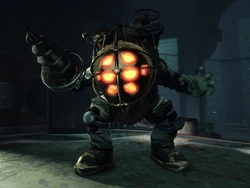

Security Bots
Los Security Bots fueron creados por Gilbert Alexander, teniendo la apariencia de drones. Estos están compuestos de metal, portando una torreta con munición y luces que determinan su estado. Son el músculo de la seguridad en la ciudad, teniendo inspiración de las torretas.
- Luz Roja: Estado violento, disparará sin pensar.
- Luz Amarilla: Estado neutral, buscará algún enemigo que ataque o que una alarma se active.
- Luz verde: Pasivo, puede ser hackeado y actuara en beneficio del hacker que ajusto su sistema.
Security Cameras
Las camaras de la ciudad se encuentran en la mayoría de las calles, estas mostrando el mismo comportamiento de los bots. Estos también poseen una luz que determina su estado, pero a diferencia de los bots, estos son más fáciles de comprender por sus colores: rojo, blanco y verde.
- Luz Roja: Estado de escaneo, busca movimiento para registrar.
- Luz Blanca: Luz de alerta, identifica al enemigo y hace sonar la alarma para que los security bots neutralicen la amenaza.
- Luz verde: Pasivo, puede ser hackeado y actuara en beneficio del hacker que ajusto su sistema, como sucede con los security bot.
Big Daddy
Los Big Daddies son los responsables de la expansion y construcción de la ciudad, ya que poseian trajes de buceo que les permitían trabajar en las profundidades del océano.
Estos trabajadores fueron modificados genéticamente para poder soportar la presión del océano y poder trabajar en las profundidades, pero su proceso es irreversible, por lo que no pueden volver a sacarse el traje.
Los Big Daddies que hay en la ciudad son:
- Bouncer: Estos son protectores cuerpo a cuerpo, con un traje de buzo gigante. Eran los encargados de taladrar las profundidades para la expansión.
Poseian un talabro que podia dispararse como un gancho, pero fue descontinuado por el gas que poseia, ya que volvia a los Bouncers salvajes.
- Rosie: Estos protectores son a distanacia, poseen un arma de largo alcance que es una remachadora y dejaban minas por el suelo.
Eran los encargados de construir las calles y colocar los vidiros de alta resistencia,
- Rumble: Este tipo de Big Daddy se orienta más en la protección de las Little Sister que la expansión o arreglo de la ciudad.
Este tiene a su disposición mini torretas y un lanzacohetes en el hombro, y si se cuenta su diseño ligero, lo que lo hace un enemigo formidable en rangos medios.
- Alpha: Este tipo de Big Daddy es el más antiguo, y fue el primero en ser creado. Su diseño es más simple, pudiendo ser capaces de sacar sus cascos si se les ordenaba.
Su armamento consistia de muchas cosas: Taladros, bayonetas, remachadoras, escopetas, etc. Sin contar que tambien podian usar plasmidos, lo que los llevo a ser mitad splicers.
-
Lancer: Este tipo de Big Daddy es más alto y delgado, teniendo inspiración en el arte deco y pareciendo un caballero.
Posee un cañon de Iones, lo que lo hace el Big Daddy con mejor armamento desde el inicio. Este cumple el mismo rol que los otros, pero su diseño es más elegante y tiene un estilo más refinado.

Luego de la expansión de la ciudad, los Big Daddies fueron modificados para proteger a las Little Sisters, que recolectaban ADAM de los cadáveres de los ciudadanos adictos (Splicers). Para eso, se necesitaron miles de estudios y la implementación de feromonas, pero la Serie Alpha fue la unica que no necesito esta medida.
Algunas series mostraron adaptarse a varias Little Sisters, pero la serie Alpha solo se pudieron conectar a una Little Sister, lo que llevo a que la serie Alpha fuera la más ineficaz. Si la niña sufria daños, el Big Daddy Aplha tambien sentia el daño y podian fallecer ambos.